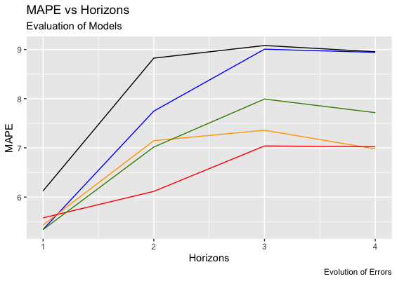

The following report showcases the energy output predictions for 98 power stations in the US. Results of the best validated model were uploaded to the Kaggle competition reaching an MAE of 2.6 million for SVM model. Take a look into the document Rmarkdown html
Face mask detection YOLO v5
YOLO nets facilitate object detection as a regression problem to spatially separated bounding boxes and directly perform a classification. A implementation of the YOLO v5 model is illustrated, with the detection of people wearing and not wearing masks. The dataset was taken from Kaggle and uploaded into Roboflow. More details about the implementation can be found in the following gihub link
Flight Analysis for consulting hubs in the US
With the idea of expanding our operations to the United States the consulting company is planning to open several offices due to growth opportunities in the region. One of the biggest cost factors in consulting is man hours. The goal is to ensure that we have a cost-efficient business centre and optimal work environment for our consultants. With this goal in mind, we must maximise efficiency through travel whilst minimising delay and lost revenue. Therefore, the current analysis made in PowerBI will help the C-levels in choosing which cities to open our new offices.
CGANs Clothes Generation
Conditional Generative Adversarial Networks (CCGAN) is a type of GAN, where it is trained in such a way that the generator and the discriminator are conditioned on the class label. Class labels can then be used for the targeted generation of images of a given type. Meaning in the case of the clothing MNIST dataset, specific items of clothing can be generated, such as ‘dress’. This is done by effectively ‘one hot encoding’ and concatenating the class labels with the input for both the discriminator and generator models. Check the code here

Coca-Cola quarterly earning per share prediction
The following project serves as a model to forecast time series data of the Coca-Cola company. The Box-Jenkins methodology was utilized, for the quarterly earnings per share from the first quarter of 1983 to the third quarter of 2009. Four potential models are shown as robust choices, where different performances can be observed for short and long-term predictions (horizons). See the code in github